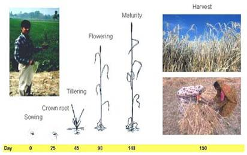
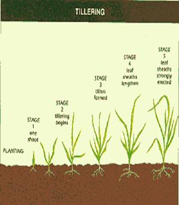

AGR 301 :: Lecture 02 ::WHEAT TRITICUM SP

Origin
- De Candolle believed – Valley of Euphrates and Tigris
- But Vavilov
- Origin of Durum wheat probably Abyssinia
- Soft wheat groups – In the region of Western Pakistan, SW Afghanistan, and S parts of mountainous Babshara
Importance
- World’s number one cereal in area
- Cultivation of wheat is as old as civilization
- It is the first mentioned crop in Bible
- Used for bread, cakes, bakeries, also manufacture of dextrose, alcohol etc
- A nutritious food of all
Classification of wheat
- Genus Tricum can be classified into 3 groups
- Diploids = 7 pairs of chromosomes
- Tetraploids = 14 pairs
- Hexaploids = 21 pairs
Commonly cultivated wheat sp
- There are 7 in the world, only 4 is important in India, they are:
- Common wheat ( T vulgare / aestivum)
- Bread wheat
- Most suited for chapati and bakery
- Cultivated throughout India
- Common wheat may be sub-divided
- Hard red winter wheat – commercial class
- Hard red spring – where winter is too severe, high protein and excellent bread making characteristics
- Soft red winter – grown in humid conditions, grains are soft, low protein, flour more suitable for cakes, cookies
- White wheat – mainly for pasty purpose
- Duram (T durum)
- Macroni wheat
- Best suited for noodles, vermicelli
- Spring habit
- Cultivated in Central & Southern India
- Emmer wheat (T dicoccum)
- Winter / spring wheat
- Wheat suitable for TN
- Preferred for granular preparation
- Gujarat, Maharastra, AP & TN
- Shot wheat (T sphaerococcum)
- Indian dwarf wheat
- Practically gone out of cultivation due to low productivity
- Small extent N. India and W Pak for local consumption
- Varieties
- Sonak – to replace Sonalika
- HD 2285
- PBW 343, HD 2687, WH 542, UP 2336, Raj 3077, CPAN 3004, PDW 215
- Many more like
- Varieties for irrigated late sown
- Varieties for salt affected areas etc
- Adaptation and distribution
- Widely cultivated cereal
- 47ºS to 57ºN latitude
- Cultivated in wide range of soils but
- Well suited to fertile well drained silt and clay loam soils
- Poorly suited to sandy or poorly drained soils
- Climate
- Wheat has hardening ability after germination
- It can germinate at temp just above 4ºC
- After germination it can withstand freezing temperatures by-
- Spring wheat - as low as (-9.4ºC)
- Winter wheat – as low as (-31.6ºC)
- Normal process starts above 5ºC under the presence of adequate sunlight
- During the process of hardening there is gradual increase in the dry matter, sugars, amide nitrogen, and amino nitrogen in the tissues
- As a result there is greater tolerance to freezing of proteins
- Hardened plants have lower moisture in the leaves and
- Water is held more tightly within the cells
- Response to photo period and growth
- It is long day plant
- Long day hastens the flowering
- Short day increase the vegetative period
- But no more varieties after the release of photo-insensitive
- Temperature and growth
- Wheat can be exposed to low temp during vegetative and high temp and long days during reproductive phases
- Optimum is 20-22ºC
- Optimum for vegetative – 16-22 º C
- Leaves are largest at 22 º C
- Temp above 22 ºC decreases the plant height, root length and tiller number
- Heading is accelerated as temp rose from 22 to 34 ºC but retarded above 34 ºC
- At grain development 25 ºC for 4- 5 weeks is optimum
- Temp above 25 ºC reduce the grain weight
Growth stages in wheat in North India
- Vegetative
- Germination : 5-7 days
- CRI : 20-25 DAS
- Tillering: from 15 days at 4-5 days until 45 DAS
- Jointing: Peak plant growth 45-60 DAS
- Internode elongation period
- Reproductive
- Boot leaf 70-75 DAS
- Flowering : 85-90 DAS
- Milking: 100-105DAS
- Dough: 105-110
- Maturity: 115 – 120

- Coordinating Research Zones
- There are 6 zones in India for wheat improvement and coordination
- Northern Hills Zone
- North Western Plans Zone
- North Eastern Plains Zone
- Central Zone
- Peninsular Zone
- Southern Hills Zone

Wheat cultivation practices
- Season
- Time of sowing decides yield potential in wheat
- Irrigated long duration varieties (135-140d)
- Nov 10-30th
- Short duration varieties (120-125)may be sown up to Dec 15
- Later than Dec 15th there is drastic reduction in yield
- Zone wise there is slight variation
- Field preparation
- Usually after harvest of Kharif crops
- Field is prepared by disking once and harrowing
- Moderate to fine tilth is suitable
- Zero tillage also possible
- After rice dibbling in lines may be an option
- Methods of sowing
- Broad casting
- Zero / No-tillage sowing
- Behind the plough
- Drilling
- Dibbling
- FIRB – Furrow irrigated raised bed system
- Seed rate
- Normal recommendation 100-125 kg /ha
- Increase seed rate by 25% when
- Under late sown
- When the soil moisture is less
- Broadcast requires higher seed rate – 150 kg
- For dibbling 25-30kg is sufficient
- Spacing
- Varies with varieties
- Tillering variety requires wider spacing
- Irrigated wheat spaced 22.5 cm and 8-18 cm between plants
- Rainfed wheat – 25-30 cm x 5-6cm
- When late sown closer spacing 15-16cm
- Mineral Nutrition
- Nitrogen
- Critical leaf N conc is 2.5%
- Poor tillering and small ear heads are deficiency
- Indian soils lack N
- General recommendation
- For irrigated crop -s 120-150 kg
- Rainfed - 40-60kg
- Irrigated 2-3 equal splits
- Heavy soils 2 splits
- Light soils three
- Basal, 1st irrigation and 2nd irrigation are time
- In rainfed crop if moisture availability is sufficient
- Additional dose may be – 40kg/ha
- All the nitrogenous may be used
- For calcarious and strongly alkaline soils
- Ammonium sulphate is better than Urea
- Phosphorous
- It is also critical nutrient particularly for dwarf
- If adequate P fertilization is done for
- Maize-wheat
- Sorghum – wheat
- Rice-wheat
- P may be reduced or avoided
- But most of soils are responding
- May be 0.1% dry leaf P conc be maintained
- 60kg P2O5 at planting is good
- Source wise water soluble is preferred
- Rock phosphate efficiency much lower
- For acid soils
- Use of rock phosphate with pyrites may be useful
- When the water soluble (SSP / DAP) when placed near the root zone is more efficient than broadcasting
- All P as basal
- Potassium
- There is response to applied K
- In general Indo-Gangetic alluvium is rich in K and not recommended with K
- General recommendation is 40-60kg /ha
- May be basal or split along with 1st irrigation
- Micro-nutrients
- Zn, Fe, Cu, Mn and B are reported as deficient in certain soils and conditions
- Zn is widely reported
- <10ppm in leaves is acute deficiency
- Higher P is interfering with Zn
- Generally 25 kg Zn SO4 /ha
- Foliar spray with 0.5%
- 5kg ZnSO4 along with 2.5kg slaked lime is dissolved in 1000 lit to spray 1 ha
- INM
- Green manure / FYM applied to Kharif crop
- A pulse crop before wheat
- Biofertlizers along the seeds and soil
- Irrigation
- Highly responds to irrigation
- 4-6 irrigations are essential
- 40-50% depletion of ASM
- Appropriate IW :CPE ratio for wheat 0.7-0.9
- On clay loam up to 80% depletion
- Critical phases for irrigation are
- CRI – 20-25 DAS)
- Second most critical stage – Flowering
- Third important stage – jointing and milk stages
- For varying number irrigations
No of irrigations |
Stages |
1 |
CRI |
2 |
CRI + LJ |
3 |
CRI + B + M |
4 |
CRI + LT + F + M |
5 |
CRI + LT + LJ + F + M |
6 |
CRI + LT + LJ + F + M + D |
- Weed control
- Deadly competitor
- Should be controlled at the early
- Better filed maintenance to previous crop
- Problematic mono-cot weeds are
- Phalaris minor – (Canary grass)
- Avena fatua (Wild oat)
- Polypogan monspliensis
- Hand weeding is recommended
- Before 20-25DAS
- Second weeding 2 weeks later
- Use of herbicides becomes handy
- Dicots can be controlled by 2,4 D (EE) 0.3-0.4 kg /ha at 35DAS
- Monocots can be controlled by
- Isoproturon 1-1.5kg /ha or
- Methabenzthiazuron 1.5 kg or
- Metoxuron 1.5 kg /ha on 30-35 DAS
- Pre-emergence application of Pendimethalin or Isoproturon is broad spectrum control
- Harvesting and threshing
- Yellow and dry straw is visual indicator
- Shredding, breaking of spikes are over ripe
- Most suitable stage is grain moisture of 20-25%
- Combine harvester is ideal
- Usually manually harvested or by reapers is dried for 3-4 days on threshing floor and threshed
- Wheat based cropping systems
- Normally wheat is cultivated after Kharif crops under double crop sequence
- Kharif crops may be
- Rice, maize, sorghum, millet, mungbean, urdbean, cowpea, pigeonpea, cotton etc.,
- A third crop of any catch crop is raised in certain pockets
- In UP wheat is alternated with sugarcane
Multiple choice questions
- Bread wheat is ___________
a. Secale cereale b. Hordeum vulgare c. Triticum aestivum - According to Vavilov the origin of Durum wheat is ________
a. Abyssinia b. Asia c. Africa - Permanent adventitious roots of wheat is called __________
a. Primary roots b. Secondary roots c. Clonal roots - Common wheat is ________
a. Triticum durum b. Triticum dicoccum c. Triticum aestivum - Duram wheat is ________
a. Triticum durum b. Triticum dicoccum c. Triticum aestivum - Emmer wheat is ________
a. Triticum durum b. Triticum dicoccum c. Triticum aestivum - Wheat is a _________ plant
a. Short day b. long day c. day neutral - Duration of CRI stage in wheat is ________ DAS
a. 45-60 b. 20-25 c. 30-45 - Duration of boot leaf stage in wheat is ________ DAS
a. 45-60 b. 70-75 c. 30-45 - Duration of flowering stage in wheat is ________ DAS
a. 85-90 b. 70-75 c. 100-105 - Duration of milking stage in wheat is ________ DAS
a. 85-90 b. 70-75 c. 100-105 - Duration of dough stage in wheat is ________ DAS
a. 105-110 b. 115-120 c. 100-105 - Duration of maturity stage in wheat is ________ DAS
a. 105-110 b. 115-120 c. 100-105 - Normal recommendation of seed rate for wheat is ________ kg/ha
a. 75-90 b. 90-100 c. 100-125 - The recommended seed rate for wheat under dibbling method is ________ kg/ha
a. 25-30 b. 30-45 c. 45-60 - General recommendation of inorganic fertilizers for wheat is ________ kg/ha
- 120-150 : 60 : 40-60 b. 130-145 : 65 : 60 c. 145-160 : 65 : 65
- Spacing for irrigated wheat is ____________
- 22.5 x 8-18 cm b. 25-30 x 5-6cm c. 25 x 15 cm
- Spacing for rainfed wheat is ____________
- 22.5 x 8-18 cm b. 25-30 x 5-6cm c. 25 x 15 cm
| Download this lecture as PDF here |